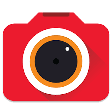

<!--
  Generated template for the MediaPage page.

  See http://ionicframework.com/docs/components/#navigation for more info on
  Ionic pages and navigation.
-->
<ion-header>

  <ion-navbar color="red">
    <ion-title style="text-align: center">Media</ion-title>
  </ion-navbar>

</ion-header>


<ion-content padding>

  
        <button ion-button round (click)="uploads('camera')">
            
         </button>
         <h3>Camera</h3>
<br>
<br>


        <button  ion-button round (click)="uploads('video')">
            
        </button>
        <h3>Video</h3>
        <br>
        <br>
     

        <button ion-button round (click)="uploads('audio')">
                
        </button>
        <h3>Audio</h3>
</ion-content>
